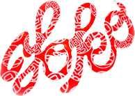

Bio
Yoko Yamaguchi
- 1981 — Born in Canberra, Australia
- 1982 — Lives in Yamaguchi prefecture, Japan
- 1997 — Back in Canberra
Education & Residency
- 2001 — Graduated Diploma of Visual Art and crafts, Printmaking, Canberra Institute of Technology (CIT), Canberra
- 2004 — Graduated Bachelor of Arts, Visual Art, Print media and drawing, Australian National
University (ANU), School of Art, Canberra
- 2005 — Graduated Bachelor of Arts, Visual Art, (Honours), Print media and drawing
Australian National University (ANU), School of Art, Canberra
- 2006 — Artists residency at Megalo Access Arts, Canberra, ACT
Awards
- 2005 — The EASS (Emerging Artist Support Scheme) Strathnairn Art Association Exhibition Award, Canberra, ACT
The EASS (Emerging Artist Support Scheme) Megalo Access Arts Residency 3 months, Canberra, ACT
Solo Exhibitions
- 2006 — “Yoko” An exhibition of recent work by Yoko Yamaguchi, Strathnairn Homestead Gallery, Canberra, ACT (sponsored)
- 2008 — “Yoko -Only Me-” An exhibition of recent and new paper work by Yoko Yamaguchi, collaboration works with Long Hoang Phan, Tuggeranong Arts Centre Gallery, Canberra, ACT (sponsored)
- 2011 — “Yoko~ Soul~”, Kaori gallery in Canberra city framing gallery, Canberra, ACT
Group Exhibitions
- 2001 — "Finale!" CIT Diploma of Visual Art and Crafts Final Exhibition, Canberra CIT Reid Campus, ACT
- 2002 — "eMerging // Women of the World", Belconnen Gallery, Canberra, ACT
- 2005 — "Blender" recent work from the printmedia and drawing department, ANU School of Art 2005, ANCA Gallery (Australian National Capital Artists inc.), Canberra, ACT
- 2005 — "Graduate Exhibition 2005", CSA Gallery, ANU school of Art, Canberra ACT
- 2008 — "Imagined Realities” ANCA Gallery (Australian National Capital Artists inc.), Canberra, ACT
- 2009 — “view: culture, design: life” art + design Festival summer 09, Benedict House, Queanbeyan, NSW
- 2010 — “The First Fifteen: Art Mine and Design Artist Group”, The Front Gallery and Cafe, Canberra, ACT
- 2012 — “Open Your Eyes!”: Observations and interpretations, multicultural contemporary art exhibition, Belconnen Arts Centre, Canberra ACT
Publication
- 2009 — “Art Monthly Australia April 2009 #218”, p48. Editor Maurice O’Riordan